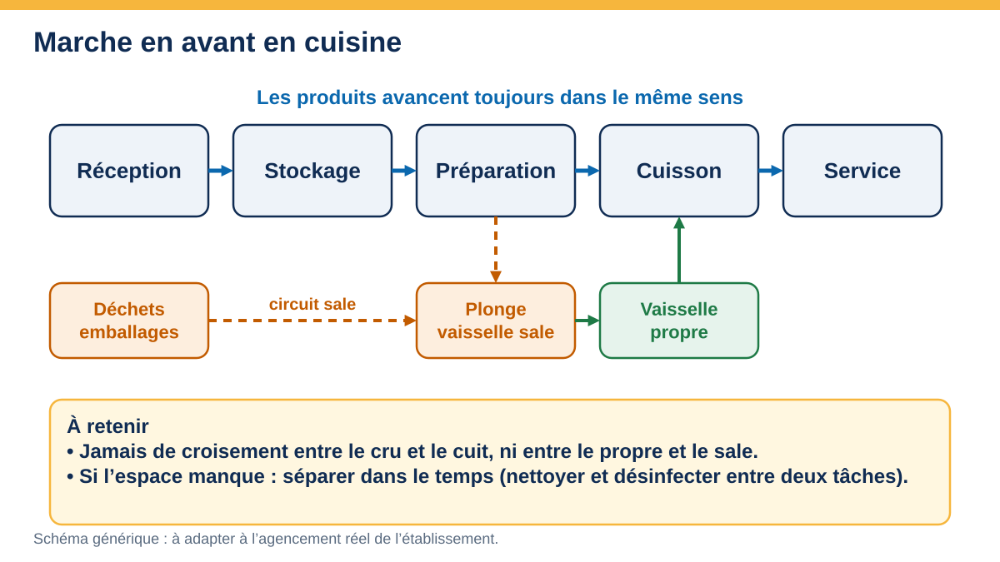
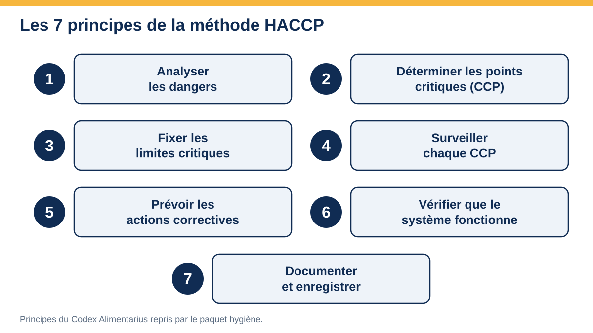
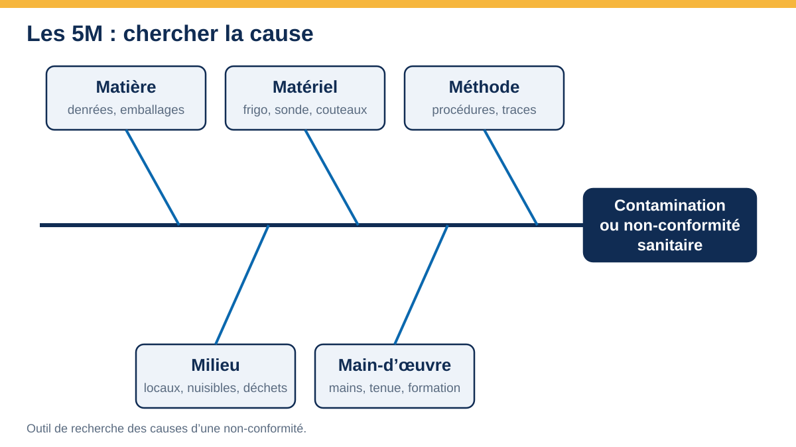
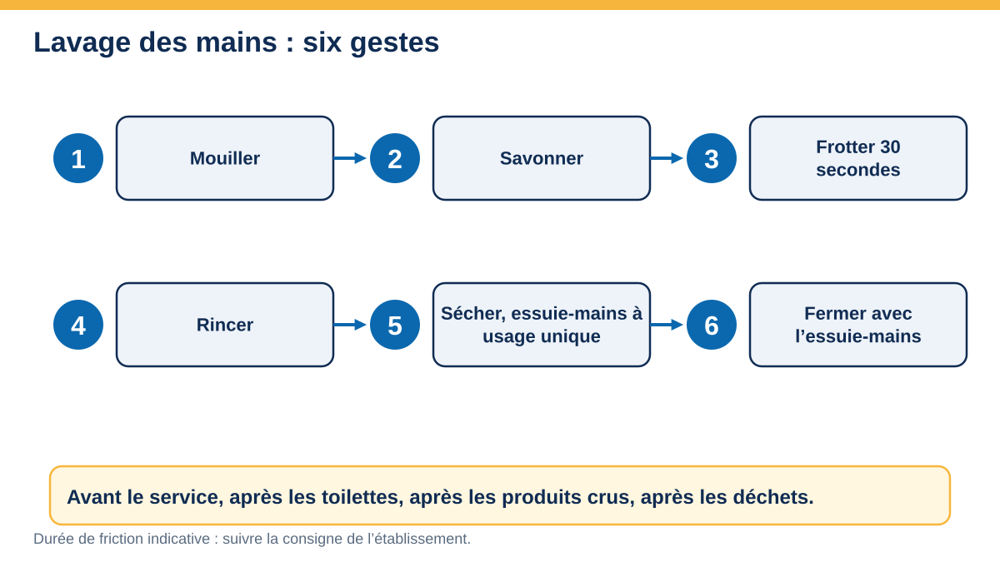

Galerie
Schémas pédagogiques originaux : cliquez pour agrandir, flèches pour parcourir.
Schémas

PMS · BPH

PMS · chaîne du froid

PMS · HACCP

PMS · recherche de causes

PMS · BPH

PMS · HACCP

PMS · amélioration continue

PMS · BPH

PMS · BPH

Document unique

Document unique

Document unique

Gestes qui sauvent

PMS · BPH

PMS · traçabilité

Gestes qui sauvent
Scènes de cuisine à analyser
Des scènes réalistes accompagnent la session : repérer ce qui est conforme ou non, puis proposer une action corrective.
Les schémas sont des repères pédagogiques : les valeurs de votre établissement et la réglementation en vigueur prévalent. Les scènes sont des illustrations générées par intelligence artificielle, recadrées et agrandies : indicatives, elles ne valent pas validation réglementaire et ne remplacent pas l’observation de votre établissement.